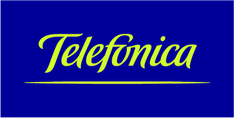

Confian en nosotros
Empresas y organismos que eligieron Servicat



Somos una empresa constructora y estudio de arquitectura especializada en el desarrollo de proyectos para entidades públicas y privadas en toda Argentina.
En Servicat, combinamos más de dos décadas de experiencia con las últimas tendencias en construcción y arquitectura. Nuestro equipo multidisciplinario trabaja con pasión para transformar ideas en espacios que perduran en el tiempo.
Trabajamos tanto con entidades públicas como privadas, brindando soluciones integrales que van desde el diseño arquitectónico hasta la construcción final, garantizando calidad, seguridad y cumplimiento de plazos.
Desarrollamos edificios residenciales, casas en barrios cerrados, torres de oficinas y proyectos comerciales con los más altos estándares de calidad.
Ver proyectosInstalación de redes cloacales, expansión de redes de agua, entubamientos y conexiones domiciliarias para empresas de servicios públicos.
Ver proyectosTendido de líneas de media y baja tensión, instalación de transformadores, alumbrado público y mantenimiento eléctrico integral.
Ver proyectosConstrucción de gasoductos, plantas reguladoras, instalaciones industriales y domiciliarias para las principales distribuidoras del país.
Ver proyectosRestauración de edificios históricos, puesta en valor de patrimonio, reconstrucción de viviendas y obras de arquitectura pública.
Ver proyectosGestión integral de proyectos de infraestructura para organismos públicos y empresas privadas en todo el territorio nacional.
Ver proyectos


Convertimos tus ideas en realidad. Contactanos para una consulta sin compromiso y descubrí cómo podemos ayudarte a construir tu próximo proyecto.
Solicitar PresupuestoEstamos listos para escuchar tu proyecto. Completá el formulario o contactanos directamente por cualquiera de nuestros canales.
Av. Olazabal 4646 Piso 1° Dto. A, Capital Federal, Argentina
info@servicat.com.ar
Lunes a Viernes: 9:00 - 18:00